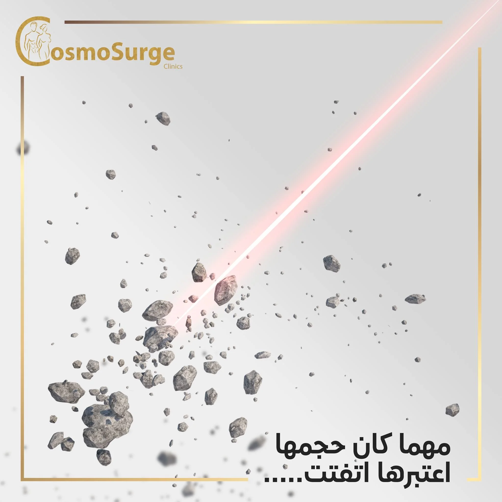

زراعة دعامات الانتصاب (الهيدروليكية والمرنة)
الحل الطبي الجذري والنهائي لعلاج ضعف الانتصاب المستعصي، لاستعادة الكفاءة والحياة الزوجية الطبيعية بثقة تامة مع ضمان دولي مدى الحياة.

- ماجستير جراحة المسالك البولية و الذكورة
- عضو الجمعية الأوروبية لجراحة المسالك البولية (EAU)
أنواع الدعامات المتاحة
نساعدك في اختيار النوع الأنسب لحالتك الصحية ونمط حياتك
الدعامة الهيدروليكية (3 قطع)
الخيار الأكثر محاكاة للطبيعةتتكون من أسطوانتين داخل النسيج الكهفي ومضخة خفية وخزان سائل حيوي. توفر انتصاباً كاملاً عند الرغبة وارتخاءً تاماً وطبيعياً 100%.
- check_circle مخفية كلياً ولا يمكن تمييزها أو ملاحظتها بالعين
- check_circle الإحساس بالمتعة والقذف والنشوة يظل طبيعياً بالكامل
- check_circle صلابة كاملة وارتخاء انسيابي بضغطة زر بسيطة مخفية
الدعامة المرنة (القابلة للثني)
بساطة تشغيل فائقةتتكون من زوج من الأسطوانات المصنوعة من السيليكون الطبي عالي الجودة مع قلب معدني مرن، يتم تعديل وضعيتها يدوياً للأعلى أو للأسفل بسهولة.
- check_circle آلية ميكانيكية بسيطة دون أي أعطال أو مكونات معقدة
- check_circle خيار اقتصادي ومثالي لكبار السن وضعف حركة اليدين
- check_circle إجراء جراحي سريع للغاية وتعافي قياسي
من هم المرشحون لزراعة الدعامة؟
يتم اللجوء للدعامة بعد التقييم كحل دائم في الحالات التالية:
رحلة العلاج والتعافي خطوة بخطوة
-
1
الفحص والتقييم السريري الشامل
إجراء فحص الدوبلر الملون وقياس أبعاد النسيج بدقة بالغة واختيار المقاس المثالي المخصص لكل مريض.
-
2
الجراحة الدقيقة عبر شق تجميلي
50 دقيقةإجراء لا يتعدى 50 دقيقة بشق تجميلي متناهي الصغر (أقل من 2 سم) مخفي تماماً وبأعلى معايير التعقيم العالمية.
-
3
المغادرة واستئناف الأنشطة
48 ساعةالعودة للمنزل في نفس اليوم، والقدرة على ممارسة النشاط اليومي المعتاد والعمل الخفيف خلال 48 ساعة فقط.
-
4
التفعيل وممارسة العلاقة الزوجية
4 - 6 أسابيعجلسة تدريبية سرية لتفعيل واستخدام الدعامة، وبدء الممارسة الزوجية الطبيعية والناجحة بعد 4 إلى 6 أسابيع.
تجارب حقيقية موثقة
star مجهولة الهوية للسرية"عانيت لسنوات طويلة مع مرض السكري وجربت كل الأدوية دون جدوى. بعد العملية مع دكتور كريم عادت ثقتي بنفسي بالكامل والنتيجة طبيعية ومبهرة ولم يلاحظ أحد أي شيء."
"تعامل غاية في الرقي والاحترام والأمانة العلمية من الدكتور والطاقم الطبي. خرجت في نفس اليوم والعملية بسيطة جداً وغير مؤلمة مقارنة بما كنت أسمعه."
دليل المرضى والأسئلة الشائعة
هل تؤثر الدعامة على الإحساس أو النشوة أو الإنجاب؟
هل يمكن للطرف الآخر أو أي شخص ملاحظة وجود الدعامة؟
ما هي مدة صلاحية الدعامة والضمان المقدم؟
احجز كشفك واستشارتك مع د. كريم زاهر
تقييم شامل وسري لحالتك وتحديد الخيار العلاجي الأنسب لك.
زهراء المعادي - الشطر الثالث عشر - برج الندى (الدور الأول).